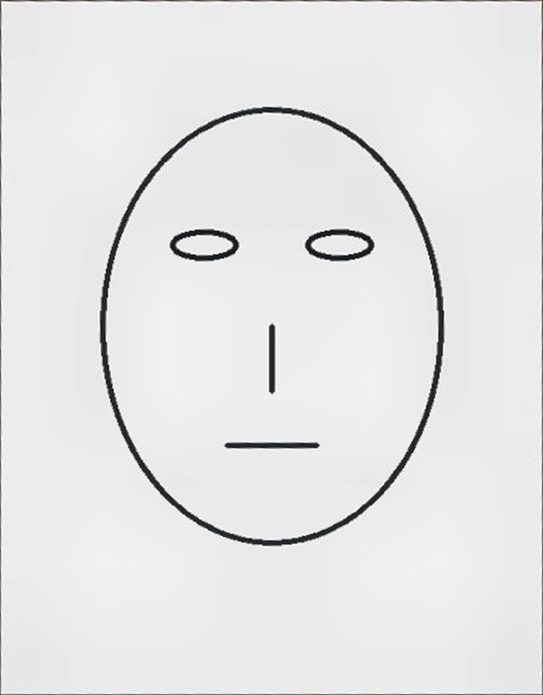
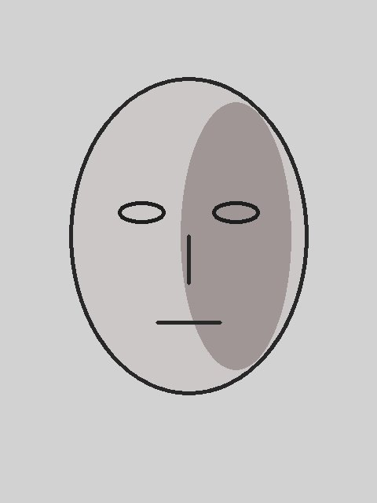

v3
Since v2
- 1Eyes sit too high on the head not fixed judged
- 2Nose base and mouth sit slightly too low not fixed measured
- 3Missing the large shadow on the right half of the face not fixed judged
Outline 0% closer to the reference than v2.


-
1
Eye line placed too high on the head
Move both eyes straight down. In the drawing the eye line sits about 26% of the way from forehead to chin; in the photo it sits about 31% (more by outline measurement). Lower them by roughly one-twentieth to one-tenth of the head height, keeping their size and spacing, which already match.
-
2
Nose base and mouth sit slightly low
Raise the bottom of the nose and the mouth line by about one-thirtieth of the head height. Nose base is at ~58% of head height (photo ~55%); mouth is at ~74% (photo ~70%). Do this after lowering the eyes so the eye-to-nose distance shortens.
-
3
Large shadow on the right half of the face is missing
Add the big shadow shape: a tall oval of even mid-dark tone starting just left of the nose line and covering the right half of the face from near the top of the head to near the chin, over the right eye, nose and right half of the mouth. Leave a thin lighter strip between the shadow and the right outline. Keep the left side of the face a light tone.
Critique by claude-opus-5-5 · lessons ad7383e